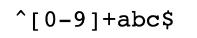
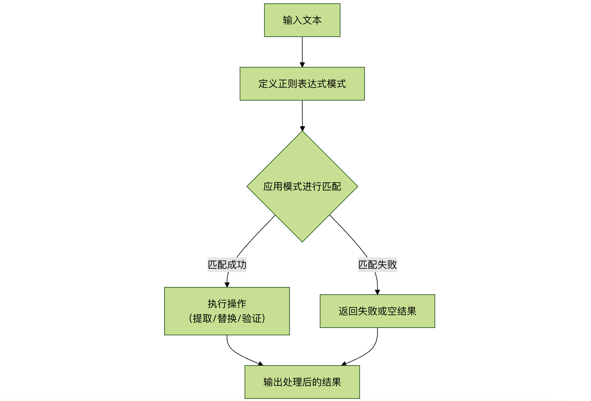

Expresiones regulares -Introducción
Una expresión regular (Regular Expression, abreviada como regex o regexp) es una poderosa herramienta de procesamiento de texto que utiliza una cadena especial para describir y hacer coincidir una serie de cadenas que cumplen ciertas reglas sintácticas.
Puedes imaginarlo como unsupercomodín; los comodines normales (como*que representan cualquier carácter) tienen funciones limitadas, mientras que las expresiones regulares pueden definir patrones de texto extremadamente complejos y precisos, desde la coincidencia simple de palabras hasta la extracción de datos estructurados complejos, capaces de todo.
Por ejemplo, es muy probable que uses? 和 *comodines para buscar archivos en el disco duro.?El comodín coincide con 0 o 1 carácter en el nombre del archivo, mientras que*el comodín coincide con cero o más caracteres. Comodata(\w)?\.datun patrón como este buscará los siguientes archivos:
Usar*el carácter en lugar de?el carácter amplía la cantidad de archivos encontrados.data.*\.datCoincide con todos los siguientes archivos:
Aunque este método de búsqueda es útil, sigue siendo limitado. Al comprender*el funcionamiento de los comodines, se introducen los conceptos en los que se basan las expresiones regulares, pero estas son más potentes y mucho más flexibles.
El uso de las expresiones regulares permite lograr funciones potentes de manera sencilla. A continuación se muestra un ejemplo simple:

-
^Coincide con la posición inicial de la cadena de entrada.
-
[0-9]+Coincide con varios dígitos,[0-9]coincide con un solo dígito,+coincide con uno o más.
-
abc$Coincide con letrasabcy conabcel final,$coincide con la posición final de la cadena de entrada.
Al crear un formulario de registro de usuario, si solo permitimos que el nombre de usuario contengaletras, dígitos, guiones bajos y guiones -, y establecemos la longitud del nombre de usuario, podemos usar la siguiente expresión regular para definirlo.
^[a-zA-Z0-9_-]{3,15}$
^indica el inicio de la cadena.[a-zA-Z0-9_-]representa el conjunto de caracteres, que incluye letras minúsculas, letras mayúsculas, dígitos, guiones bajos y guiones-。{3,15}indica que el conjunto de caracteres anterior aparece al menos 3 veces y como máximo 15 veces, limitando así la longitud del nombre de usuario a entre 3 y 15 caracteres.$indica el final de la cadena.
La expresión regular anterior puede coincidir conrunoob、runoob1、run-oob、run_oob, pero no coincide conru, porque contiene demasiadas pocas letras; al ser menos de 3, no puede coincidir. Tampoco coincide conrunoob$, porque contiene caracteres especiales.
Ejemplo
Coincide con cadenas que comienzan con un dígito y terminan con "abc".:
El texto marcado a continuación es la expresión de coincidencia obtenida:
Pruébalo »
Metacaracteres y características de las expresiones regulares
Coincidencia de caracteres
- Caracteres normales: los caracteres normales coinciden según su significado literal; por ejemplo, al hacer coincidir la letra "a", se encontrará el carácter "a" en el texto.
- Metacaracteres: los metacaracteres tienen significados especiales, por ejemplo
\dcoincide con cualquier dígito,\wcoincide con cualquier carácter alfanumérico,.coincide con cualquier carácter (excepto saltos de línea), etc.
Cuantificadores
*: coincide con el patrón anterior cero o más veces.+: coincide con el patrón anterior una o más veces.?: coincide con el patrón anterior cero o una vez.{n}: coincide con el patrón anterior exactamente n veces.{n,}: coincide con el patrón anterior al menos n veces.{n,m}: coincide con el patrón anterior al menos n veces y como máximo m veces.
Clases de caracteres
[ ]: coincide con cualquier carácter dentro de los corchetes. Por ejemplo,[abc]coincide con los caracteres "a", "b" o "c".[^ ]: coincide con cualquier carácter que no esté dentro de los corchetes. Por ejemplo,[^abc]coincide con cualquier carácter excepto "a", "b" o "c".
Coincidencia de límites
^: coincide con el inicio de la cadena.$: coincide con el final de la cadena.\b: coincide con un límite de palabra.\B: coincide con un límite que no es de palabra.
Agrupación y captura
( ): se utiliza para agrupar y capturar subexpresiones.(?: ): se utiliza para agrupar sin capturar subexpresiones.
Caracteres especiales
\: carácter de escape, se utiliza para hacer coincidir el propio carácter especial..: coincide con cualquier carácter (excepto saltos de línea).|: se utiliza para especificar la selección de múltiples patrones.
Definición y usos de las expresiones regulares
Técnicamente, una expresión regular es una cadena compuesta por caracteres normales (por ejemplo, las letras de la a a la z) y caracteres especiales (llamados metacaracteres), que constituye unpatrón de búsqueda (pattern), que se utiliza para realizar operaciones de búsqueda, coincidencia, reemplazo o división en el texto.
Usos principales
Las expresiones regulares tienen principalmente tres grandes usos:
- Búsqueda y coincidencia de texto: determinar rápidamente si un texto contiene subcadenas que coinciden con un patrón específico. Por ejemplo, comprobar si una cadena tiene un formato de dirección de correo electrónico válido.
- Reemplazo de texto: reemplazar todas las partes del texto que coinciden con un patrón específico por contenido nuevo. Por ejemplo, cambiar todas las fechas de un documento del formato
YYYY-MM-DDal formatoMM/DD/YYYY。 - Extracción y división de texto: extraer con precisión las partes que nos interesan de un gran bloque de texto, o dividir el texto en una matriz según un delimitador específico. Por ejemplo, extraer todas las direcciones IP de un archivo de registro, o dividir una cadena CSV con comas.
Escenarios de aplicación de las expresiones regulares
Las expresiones regulares están presentes en casi todos los aspectos de la programación y del procesamiento de texto cotidiano. A continuación se muestran algunos de los escenarios más comunes:
1. Validación de datos
Este es uno de los usos más clásicos de las expresiones regulares: garantizar que los datos introducidos por el usuario cumplan el formato esperado.
- Validar direcciones de correo electrónico: comprobar si la entrada se parece a
username@domain.com。 - Validar números de teléfono móvil: comprobar si cumple el formato de número de teléfono móvil del país/región (por ejemplo, los 11 dígitos de China).
- Validar la fortaleza de la contraseña: exigir que la contraseña contenga letras mayúsculas y minúsculas, dígitos y caracteres especiales.
- Validar formatos de fecha: asegurarse de que la fecha tenga un formato válido como
2023-12-25或12/25/2023, etc. - Validar números de documento de identidad: hacer coincidir números de documento de identidad que sigan reglas de codificación específicas.
2. Búsqueda y filtrado de texto
Localizar rápidamente información en grandes volúmenes de texto.
- Análisis de registros (logs): buscar en los registros del servidor todos los
ERROR或WARNregistros de nivel . - Búsqueda de código: en el IDE o editor, usar expresiones regulares para buscar todas las definiciones de funciones (como
function xxx(...)) o nombres de variables específicos. - Búsqueda en contenido de documentos: buscar todas las apariciones de números de teléfono o URLs en documentos largos.
3. Reemplazo y limpieza de texto
Modificar contenido de texto en lotes para normalizarlo.
- Formatear datos: cambiar los números de teléfono del formato
12345678901al formato123-4567-8901。 - Limpiar datos: eliminar los caracteres de espacio en blanco innecesarios del texto (como múltiples espacios consecutivos o tabulaciones).
- Enmascaramiento de información sensible: reemplazar los números de documento de identidad en el texto por
***, como110101199001011234->110101********1234。 - Refactorización de código: renombrar variables o funciones en lote.
4. Extracción y análisis de texto
Extraer datos estructurados de texto no estructurado.
- Rastreadores web: extraer todos los enlaces del código HTML
href="...") o dirección de imagen (src="...")。 - Analizar el archivo de configuración: leer
key = valuearchivo de configuración en formato. - Extraer datos específicos: extraer todos los importes que aparecen en un texto (como
￥100.50或$99.99）。
5. División de cadenas
Utilizar reglas complejas, y no solo un único carácter, para dividir cadenas.
- Utilizar uno o más espacios, comas o punto y coma para dividir una oración.
- Según los diferentes delimitadores (como
,、;、\t) para analizar datos CSV o TSV.
El siguiente diagrama de flujo resume el flujo de trabajo central de las expresiones regulares en el procesamiento de datos:

Historia del desarrollo
Los antepasados de las expresiones regulares se remontan a las primeras investigaciones sobre cómo funciona el sistema nervioso humano. Los dos neurofisiólogos Warren McCulloch y Walter Pitts desarrollaron una forma matemática de describir estas redes neuronales.
En 1951, un matemático llamado Stephen Kleene, basándose en los primeros trabajos de McCulloch y Pitts, publicó un artículo titulado «Representación de eventos en redes nerviosas», introduciendo el concepto de expresiones regulares. Las expresiones regulares se utilizan para describir lo que él llamóálgebra de conjuntos regularesde expresiones, por lo que se adoptóexpresión regulareste término.
Posteriormente, se descubrió que este trabajo podía aplicarse a algunas investigaciones tempranas que utilizaban los algoritmos de búsqueda computacional de Ken Thompson, quien es el principal inventor de Unix. La primera aplicación práctica de las expresiones regulares fue el editor grep en Unix.
La historia aproximada de su desarrollo es la siguiente:
1951: Stephen Kleene, uno de los fundadores de la teoría de la computación y científico informático estadounidense, propuso por primera vez el concepto de lenguajes regulares y utilizó métodos formales para describir dicho lenguaje. Esto sentó las bases teóricas para el desarrollo de las expresiones regulares.
Década de 1960: Ken Thompson, uno de los cofundadores del sistema operativo Unix, desarrolló el primer programa que aplicaba realmente las expresiones regulares, que formaba parte del comando grep en Unix. Esto marcó la aplicación práctica de las expresiones regulares.
Década de 1970: Ken Thompson y Rob Pike desarrollaron el primer motor de expresiones regulares, ampliamente utilizado en sistemas Unix, lo que fue clave para la popularización de las expresiones regulares.
1986: Philip Hazel desarrolló la biblioteca PCRE (Perl Compatible Regular Expressions), una biblioteca de expresiones regulares que permite utilizar expresiones regulares de estilo Perl en diferentes lenguajes de programación.
1997: IEEE publicó el estándar POSIX.2, que incluía la especificación estándar de las expresiones regulares, lo que hizo que el comportamiento de las expresiones regulares fuera más consistente en los diferentes sistemas Unix.
Después de la década de 2000: las expresiones regulares se volvieron cada vez más populares en la programación informática y el procesamiento de texto, y los lenguajes de programación y las herramientas compatibles con expresiones regulares se volvieron más ricos y potentes, como Perl, Python, Java, JavaScript, etc.
Actualmente: las expresiones regulares siguen siendo una herramienta importante para el procesamiento de texto y la extracción de datos, con amplias aplicaciones en ciencia de datos, análisis de texto, rastreadores web, búsqueda y reemplazo de cadenas, entre otros campos.
Ámbitos de aplicación
Actualmente, las expresiones regulares se han aplicado ampliamente en muchos programas, incluidos los sistemas operativos *nix (Linux, Unix, etc.), HP y otros sistemas operativos, entornos de desarrollo como PHP, C#, Java, y muchas aplicaciones de software, donde se puede ver la presencia de las expresiones regulares.
Expresiones regulares en C#
En nuestro tutorial de C#,Expresiones regulares en C#este capítulo presenta específicamente el conocimiento sobre las expresiones regulares en C#.
Expresiones regulares en Java
En nuestro tutorial de Java,Expresiones regulares en Javaeste capítulo presenta específicamente el conocimiento sobre las expresiones regulares en Java.
Expresiones regulares en JavaScript
En nuestro tutorial de JavaScript,El objeto RegExp de JavaScripteste capítulo presenta específicamente el conocimiento sobre las expresiones regulares en JavaScript; además, proporcionamos unmanual de referencia completo del objeto RegExp de JavaScript.。
Expresiones regulares en Python
En nuestro tutorial básico de Python,Expresiones regulares en Pythoneste capítulo presenta específicamente el conocimiento sobre las expresiones regulares en Python.
Expresiones regulares en Ruby
En nuestro tutorial de Ruby,Expresiones regulares en Rubyeste capítulo presenta específicamente el conocimiento sobre las expresiones regulares en Ruby.
| Comando o entorno | . | [ ] | ^ | $ | \( \) | \{ \} | ? | + | | | ( ) |
| vi | √ | √ | √ | √ | √ | |||||
| Visual C++ | √ | √ | √ | √ | √ | |||||
| awk | √ | √ | √ | √ | awk es compatible con esta sintaxis; solo hay que añadir el parámetro --posix o --re-interval en la línea de comandos. Consulte «interval expression» en man awk. | √ | √ | √ | √ | |
| sed | √ | √ | √ | √ | √ | √ | ||||
| delphi | √ | √ | √ | √ | √ | √ | √ | √ | √ | |
| python | √ | √ | √ | √ | √ | √ | √ | √ | √ | √ |
| java | √ | √ | √ | √ | √ | √ | √ | √ | √ | √ |
| javascript | √ | √ | √ | √ | √ | √ | √ | √ | √ | |
| php | √ | √ | √ | √ | √ | |||||
| perl | √ | √ | √ | √ | √ | √ | √ | √ | √ | |
| C# | √ | √ | √ | √ | √ | √ | √ | √ |
A continuación se muestra una comparación de la compatibilidad con expresiones regulares en los lenguajes de programación más populares:
| Lenguaje de programación | Forma de soporte | Clases/módulos comunes | Ejemplo sencillo (coincidir con dígitos) |
|---|---|---|---|
| JavaScript | Soporte nativo del lenguaje | RegExpObjeto, o usar un literal/.../ |
/\d+/ 或 new RegExp("\\d+") |
| Python | Biblioteca estándarreMódulo |
reMódulo |
re.compile(r"\d+") |
| Java | Biblioteca estándarjava.util.regex 包 |
Pattern 和 Matcher 类 |
Pattern.compile("\\d+") |
| PHP | Funciones PCRE integradas | preg_serie de funciones (comopreg_match） |
preg_match("/\d+/", $text) |
| C# | System.Text.RegularExpressionsEspacio de nombres |
Regex 类 |
new Regex(@"\d+") |
| Go | Biblioteca estándarregexp 包 |
regexp 包 |
regexp.MustCompile(\d+) |
| Ruby | Soporte nativo del lenguaje, clases principales | Regexp 类 |
/\d+/ |
Haz clic para compartir notas
<p style="font-size:14px;">¡La nota debe ser una extensión del contenido de este artículo!</p><br> <p style="font-size:12px;"><a href="../tougao.html" target="_blank">Para enviar artículos, haga clic aquí</a></p> <p style="font-size:14px;"><a href="../w3cnote/runoob-user-test-intro.html" target="_blank">Cómo obtener el código de invitación de registro</a></p> <h3 class="text-muted"><i class="fa fa-info-circle" aria-hidden="true"></i> ¡Antes de compartir notas debe <a href=";.html" class="runoob-pop">iniciar sesión</a>!</h3> <p><a href="../w3cnote/runoob-user-test-intro.html" target="_blank">Cómo obtener el código de invitación de registro</a></p>